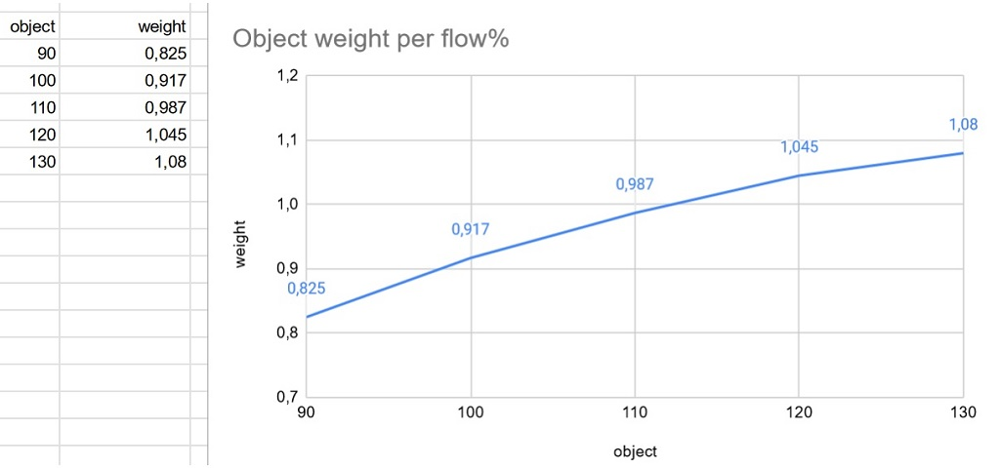
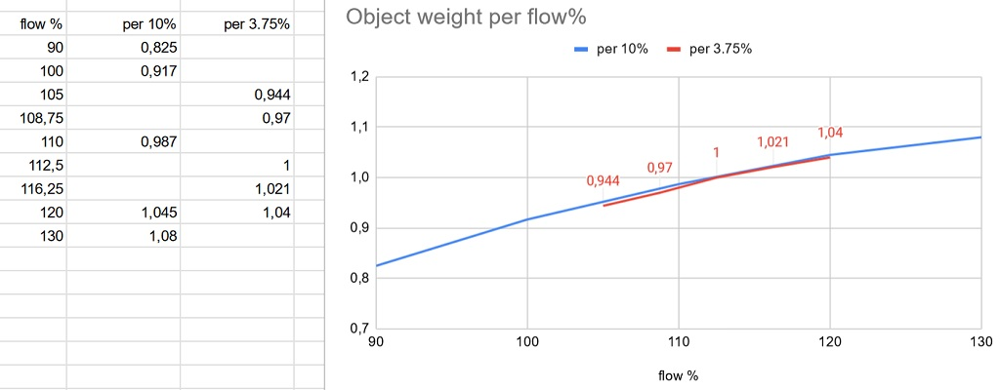
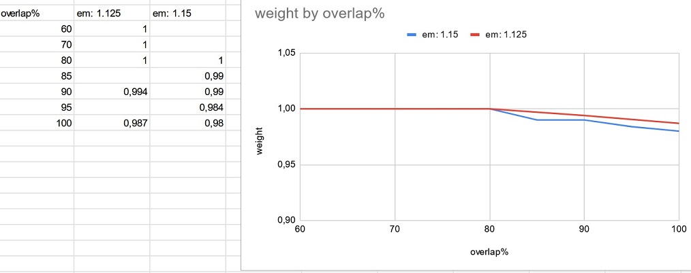
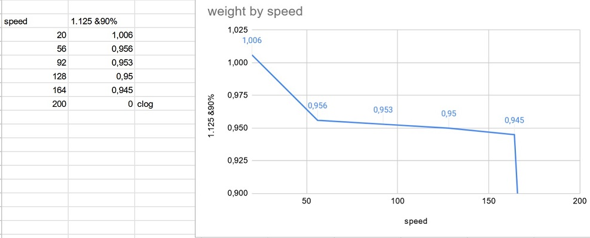

Extruderfluss Kalibrierung (nach Gewicht) |
Dieser Test hilft Ihnen dabei, einen Extrusionsmultiplikator, eine maximale Überlappung und eine Kurve für die Extruderfluss Kompensation bei hohen Geschwindigkeiten zu bestimmen. Das ist besonders nützlich, wenn ein benutzerdefinierter Drucker zum ersten Mal kalibriert wird.
Diese Kalibrierung ist in drei Hauptschritte aufgeteilt:
Sie benötigen möglichst eine präzise Waage, idealerweise mit bekannten Vergleichsgewichten.
Mit diesem Schritt können Sie prüfen, welche maximalen Extrusionsmultiplikatoren überhaupt sinnvoll sind.
Wählen Sie zunächst ein Filament mit gutem Durchmesserprofil aus, zum Beispiel Prusament, bei dem der Filament Extrusionsmultiplikator normalerweise 1 sein sollte. Erstellen Sie dann ein Filamentprofil mit der passenden Dichte, falls es noch nicht existiert. Stellen Sie die maximale Druckgeschwindigkeit des Filaments für Ihren Drucker oder Extruder auf einen eher niedrigen Wert, zum Beispiel 20 mm/s, damit der Extrusionsfluss nicht begrenzt wird.
Wählen Sie anschließend das Zielgewicht der Proben. Ein geringeres Gewicht ist schneller gedruckt, lässt sich aber schwerer exakt messen. Wenn Sie Vergleichsgewichte haben, wählen Sie am besten eines, das Sie direkt danebenlegen können.
Klicken Sie auf "Generate for multiple flow" und drucken Sie die Proben auf Ihrem Drucker. Die Druckreihenfolge sollte so gewählt sein, dass zuerst die Objekte nahe 100% Fluss gedruckt werden. Prüfen Sie regelmäßig, ob ein Druck fehlzuschlagen droht. Ein zu geringer Fluss kann dazu führen, dass ein Teil nicht ausreichend auf dem Druckbett haftet, ein zu hoher Fluss kann dazu führen, dass das Teil an der Düse festschmilzt.
Jedes Objekt trägt seinen Flusswert im Namen. Beschriften Sie die gedruckten Teile zusätzlich mit einem Marker, damit sie eindeutig zugeordnet werden können. Wiegen Sie die Teile und tragen Sie die Werte in eine Tabelle ein. Sie können dazu eine Tabelle oder ein Spreadsheet anlegen und alle Gewichte pro Extrusionsfluss Prozentwert notieren, um eine Kurve wie unten zu erhalten.

Hier sieht man, wo die Kurve die horizontale Linie bei "1g" schneidet. In diesem Beispiel wurde das Würfelgewicht auf 1g gesetzt. Setzen Sie den minimalen und maximalen Flussmultiplikator auf Werte rund um diesen Schnittpunkt, hier also 1.05 bis 1.2. Erzeugen und drucken Sie dann erneut eine Platte.

Die neue Serie zeigt in meinem Fall, dass 1.125 der perfekte Extrusionsmultiplikator für meinen Ender 3 ist.
Danach können wir den Filament Extrusionsmultiplikator auf diesen Wert setzen. Tragen Sie ihn in die Einstellung für den Extruderfluss ein und speichern Sie das Profil.
Der vorherige Test wurde mit maximal 80% Überlappung durchgeführt. Um jedoch eine bessere Festigkeit und Haftung zu erreichen, möchten wir die Überlappung möglichst weit erhöhen. Mit diesem Test sehen wir, welche Überlappung Ihre Filament Extruder Kombination verarbeiten kann.
Erzeugen und drucken Sie eine erste Serie mit einem Minimalwert unter 80% und einem Maximalwert von 100%. Markieren Sie wie beim vorherigen Test jedes Teil mit seinem Überlappungswert.
Tragen Sie die Werte erneut in eine Tabelle ein und betrachten Sie die Form der Kurve.
Falls nötig, können Sie noch eine weitere Runde durchführen. Wenn Ihre ideale Überlappung unter 80% liegt, sollten Sie die erste Phase wiederholen. Speichern Sie dabei unbedingt den neuen Überlappungswert in Ihrem Filamentprofil und gegebenenfalls in allen Überlappungsfeldern des Druckprofils.

In meinem Beispiel sieht man, dass unter 80% Überlappung der Fluss nicht ansteigt. Das bedeutet, dass die Hohlräume nicht weiter gefüllt werden können und dies nicht der begrenzende Faktor ist. Oberhalb von 80% sinkt der Fluss etwas, weil der kleinere Hohlraum mehr Druck in der Düse erfordert. Der Rückgang ist aber nicht stark. Ich kann daher 80% oder 90% als Überlappungswert verwenden. Sie können diesen Wert entweder als maximale Filament Überlappung oder direkt im Druckprofil setzen.
Jetzt haben wir eine gute Vorstellung vom Extrusionsmultiplikator und von der Überlappung. Dieser Test zeigt uns, welchen Einfluss die Druckgeschwindigkeit auf den Fluss hat.
Wählen Sie Ihre minimale und maximale Geschwindigkeit. Diese Werte sollten idealerweise schon gesetzt sein, aber wenn die Profile keine Begrenzung enthalten, wählen Sie sie manuell. Danach wieder: generieren, drucken, beschriften und eine Kurve erstellen.
Die Kurve sollte ungefähr wie eine inverse Asymptote aussehen. Anschließend müssen wir die Extruder Schlupfkompensation mit passenden Werten füllen, um die Kurve zu korrigieren. Wenn das erledigt und gespeichert ist, erzeugen und drucken Sie erneut. Eine vollständige Kompensation ist nicht immer möglich. Wählen Sie daher eine maximale Druckgeschwindigkeit und verwenden Sie diese als Begrenzung für das Filament, den Drucker in den Maschinenlimits und gegebenenfalls auch für das Druckprofil.

In meinem Beispiel zeigt die Geschwindigkeitskurve, dass Geschwindigkeiten über 160 dazu führen können, dass der Extruder das Filament beschädigt und der Druck fehlschlägt. Zwischen 20 und 50 mm/s gibt es einen deutlichen Abfall, zwischen 50 und 150 dagegen kaum noch. Das ist etwas ungewöhnlich und zeigt, dass weitere Tests nötig sind, um das Verhalten meines Druckers besser zu verstehen. Zur Kompensation kann ich beispielsweise die Werte speed:20->flow:1, speed:50->flow:1.045 und speed:150->flow:1.058 in die Extruderfluss Kompensation eintragen.